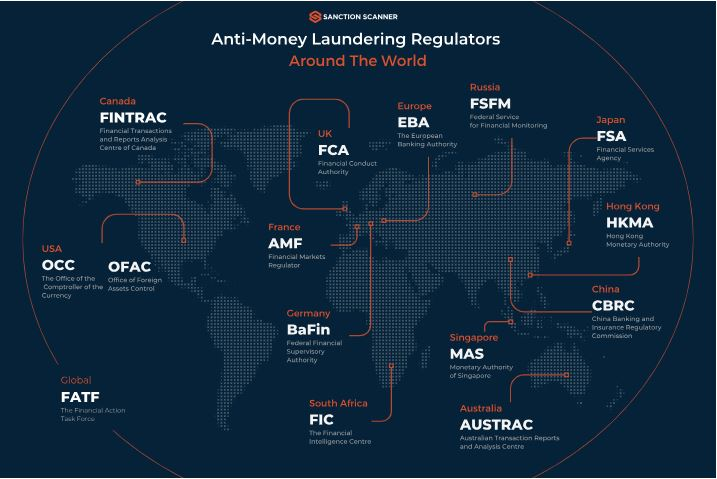

Anti–Money Laundering Oversight
The Trading Center maintains a continuous anti–money laundering (AML) monitoring framework designed to identify, prevent, and mitigate the misuse of financial systems for illicit activity. Oversight focuses on transaction origin, fund movement patterns, cross-border routing behaviour, and settlement consistency across participating jurisdictions.
Monitoring activities include the analysis of incoming and outgoing transaction flows, abnormal transfer sequencing, jurisdictional risk indicators, and inconsistencies between declared source-of-funds information and observed transaction behaviour. Where elevated risk indicators are detected, additional verification steps may be required prior to withdrawal clearance.
As part of international AML standards, clients may be obligated to confirm the origin of funds used within a trading environment.
Clients are advised that AML verification steps form part of the withdrawal clearance process and may impact release timelines. Detailed information regarding applicable verification requirements, clearance sequencing, and compliance obligations can be reviewed on the Withdrawals page.

OVERVIEW
The Trading Center operates as an international compliance and oversight body focused on the supervision of cross-border trading activity and transactional market conduct. Its mandate is to observe, assess, and document how trading companies interact with client funds, execute orders, process withdrawals, and maintain internal liquidity structures across jurisdictions.
Monitoring includes irregular trading patterns, abnormal withdrawal behavior, settlement flow deviation, routing irregularities, and mismatch between declared operating models and observed transactional behavior.
Public directory entries, procedural bulletins, withdrawal guidance, and external news relay for market context. For operational matters, please refer to the support channels below.